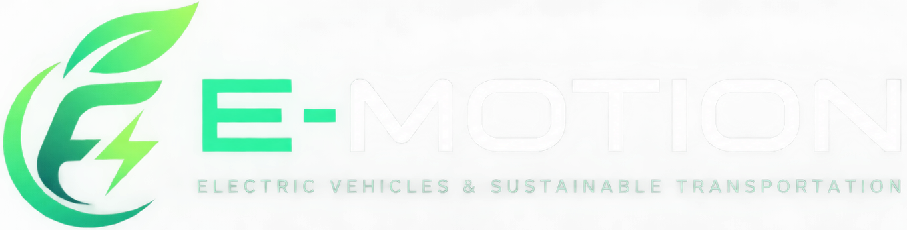
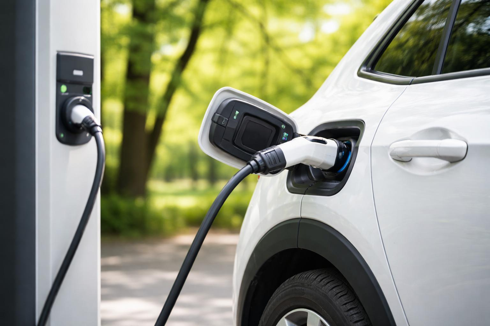
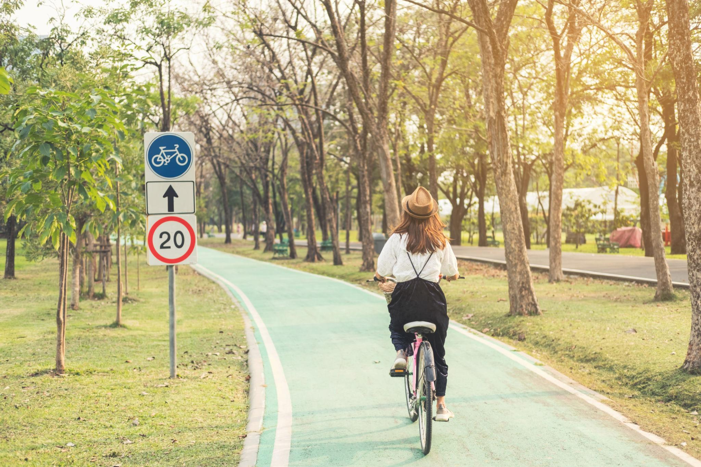
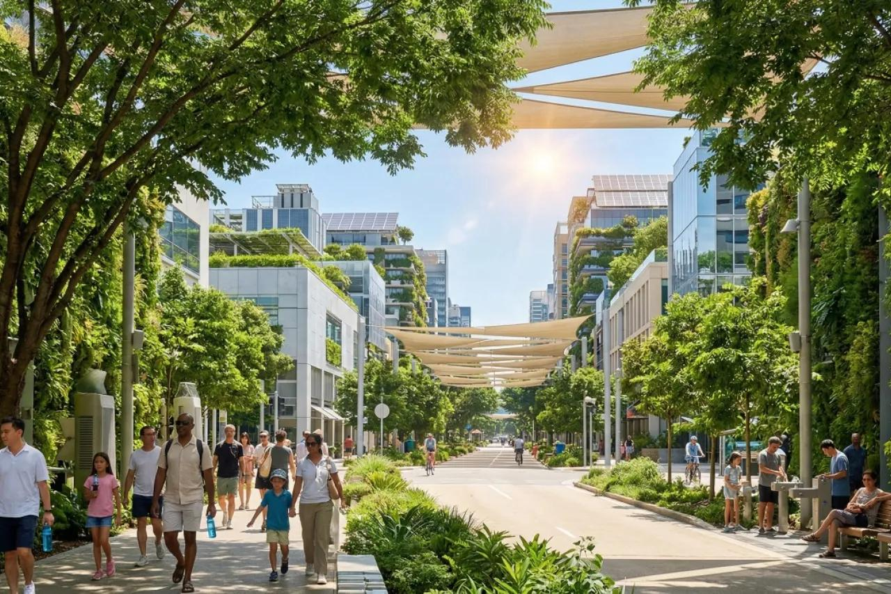
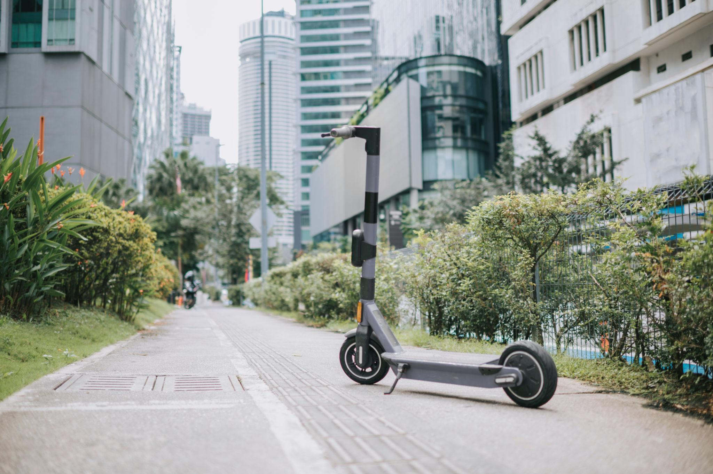

ELECTRIC VEHICLES
What to Know Before Buying an EV
Explore battery range, charging options, running costs and the important factors to consider before buying an electric car.
Read More
Discover stories, tips and insights about electric vehicles, clean energy and sustainable transportation.
Explore Articles
Electric mobility is changing the way we travel. Learn how electric vehicles work, why charging infrastructure matters and what to consider before choosing an EV.
Read ArticleFresh ideas to help you understand and embrace sustainable transportation.
Explore battery range, charging options, running costs and the important factors to consider before buying an electric car.
Read More
Discover how buses and trains can help reduce the number of individual car journeys and support connected cities.
Read More
Walking and cycling for suitable short trips can support a healthier lifestyle while reducing transport emissions.
Read More
Learn why green spaces, safe walking routes and better urban planning matter for sustainable communities.
Read More
Explore shared rides and other mobility options that can make everyday travel more flexible and convenient.
Read MoreUnderstand how everyday travel decisions can contribute to cleaner air and a more sustainable future.
Read More